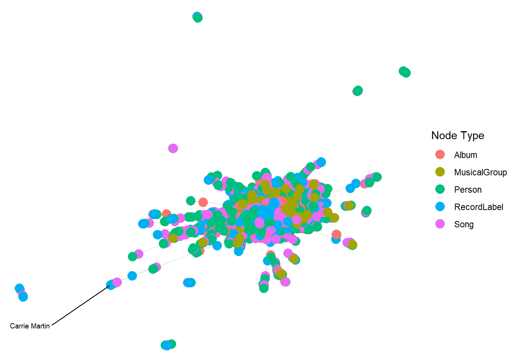

pacman::p_load(igraph, tidygraph, ggraph,
visNetwork, lubridate, clock,
tidyverse, graphlayouts,
concaveman, ggforce, jsonlite, dplyr)Data Wrangling
Getting Start
Installing and loading the required libraries
Importing data
t_data <- fromJSON("data/MC1_graph.json",
simplifyDataFrame = TRUE)Data processing
Extracting Edges and Nodes
nodes_tbl <- as_tibble(t_data$nodes)
edges_tbl <- as_tibble(t_data$links) Creating Knowledge Graph
Mapping from node id to row index
id_map <- tibble(id = nodes_tbl$id,
index = seq_len(
nrow(nodes_tbl)))Map source and target IDs to row indices
edges_tbl <- edges_tbl %>%
left_join(id_map, by = c("source" = "id")) %>%
rename(from = index) %>%
left_join(id_map, by = c("target" = "id")) %>%
rename(to = index)Filter out any unmatched (invalid) edges
edges_tbl <- edges_tbl %>%
filter(!is.na(from), !is.na(to))Creating tidygraph
graph <- tbl_graph(nodes = nodes_tbl,
edges = edges_tbl,
directed = t_data$directed)class(graph)[1] "tbl_graph" "igraph" Visualising the knowledge graph
The tactic we used to conduct our visual analytics is ploting the whole knowledge for this dataset and then plotting sub-graphs to gain meaningful visual discovery since the whole graph will be very messy and we can hardy discover any useful patterns.
set.seed(1234)Visualising the whole graph
ggraph(graph, layout = "fr") +
geom_edge_link(alpha = 0.3,
colour = "gray") +
geom_node_point(aes(color = `Node Type`),
size = 4) +
geom_node_text(aes(label = name),
repel = TRUE,
size = 2.5) +
theme_void()Warning: ggrepel: 17411 unlabeled data points (too many overlaps). Consider
increasing max.overlaps